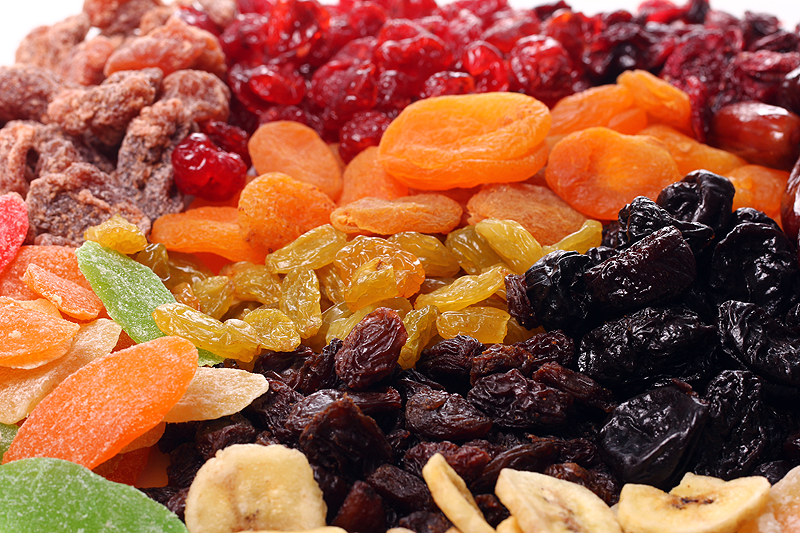

Причините за натрупването на килограми могат да бъдат най-различни. Много често то не се дължи само на прекомерно хранене, но и на депресии, чести боледувания, използване на много лекарства. Тези състояния често могат да се оправят с правилен хранителен режим. Именно това е и целта на здравословната диета, която сме подготвили за вас. Тя е подходяща за хора с изключително забързано и стресово ежедневие, като помага в борбата срещу излишните килограми. Тази диета и правилният хранителен режим по принцип предпазват и от по-сериозни болести.
От кои храни да страним и към кои да се обърнем?
Подходящи за тази диета:
мазни морски риби - сьомга, риба тон, скумрия, херинга (едни от основните съставки на тази диета)
грах, фасул, орехи (незаменими източници на растителни белтъчини)
зеленчуци (най-добре със зелени листа) и плодове (с малко количество захар) в големи количества
зехтин „extra virgin” студено пресован (да не се използва за пържене)
млечни продукти с ниска стойност на мазнини
бяло месо например пуешки гърди без кожа (това е начин за избягване на наситените мастни киселини)
Да се избягват:
царевично, слънчогледово и соево олио
продукти, пържени с мазнина
маргарин
фабрично произвежданите сладкиши (бисквити, чипсове, вафли, закуски) са строго забранени.

Диета срещу депресия
Тази диета е за всички преуморени и налегнати от депресия и меланхолия хора. Тя разчита на пресните плодове и зеленчуци, а също така и ненаситените мастни киселини. Тази диета е много балансирана и доставя големи количества антиоксиданти, витамини и минерали, целулоза и салицилати и прави организма по-устойчив на болести. Мазнините, като зехтин и рапично олио, които са богати на омега 3 киселини и антиоксидантите са много важна част от диетата. Въглехидратите от пълнозърнестите и типовите храни също са позволени и допълват диетата добре. Не е позволено да се подслаждат напитките.